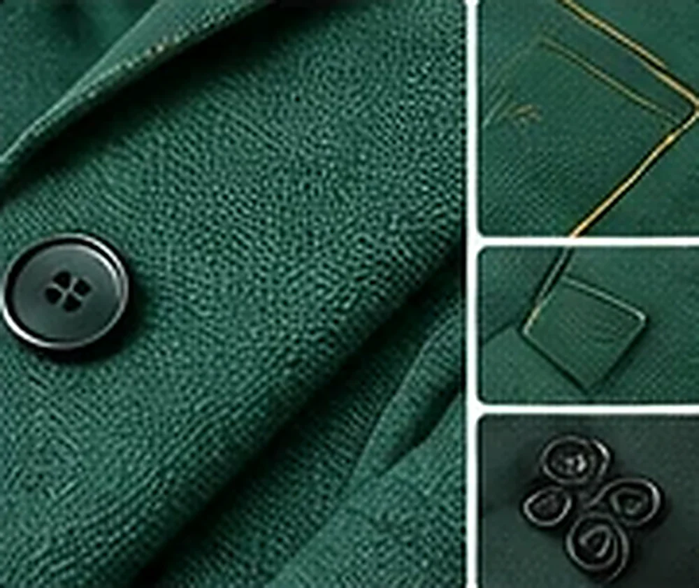

حدّد صورة القطعة في صفحتك وارفع صورة الشخص، فيرتدي القطعة مع بقاء ملامحه وجسمه وخلفيته كما هي. تظهر النتيجة مكان الصورة مباشرة لتؤكدها أو تلغيها.
صور توضيحية لأنواع المنتجات التي يمكن تجربتها، وتتفاوت النتيجة بحسب القطعة والصورة.

الأداة للتاجر داخل المحرّر: تجرّب قطعتك على صورة شخص لتقرّر شكل صفحة المنتج أو إعلانه. صورة الشخص تبقى على جهازك ولا تُحفظ في المتجر.
من الصورة إلى النتيجة في دقائق.
في صفحتك داخل المحرّر.
ثم اختر جزء الجسم المناسب.
تظهر النتيجة على الصفحة فتطبّقها أو تلغيها.
خيارات بسيطة في لوحة الأداة.
أداة PRO
إجابات سريعة عن أكثر ما يُسأل.
لا بعد؛ الأداة للتاجر داخل المحرّر. تجربة الزبون على صفحة المنتج تحتاج خدمة خادمية بحدود استعمال وسياسة خصوصية ولم تُبنَ.
تحتاج مفتاح PRO، وتؤكّد الاستهلاك قبل كل تنفيذ.
تُرفع من جهازك وتبقى في الذاكرة فقط، ولا تُحفظ إلا إذا فعّلت «تذكّر صورتي» وعندها تبقى على جهازك وتحذفها بنقرة. استعمل صوراً لك أو لمن وافق.
تتفاوت بحسب القطعة وجودة الصورتين، وقد تتفاوت أكثر مع الأحذية والإكسسوارات، فراجع الناتج قبل الاعتماد.
صورة واضحة أمامية تظهر فيها منطقة القطعة، وهاتف عادي يكفي. ارفع صورة لك حق استعمالها.
نعم عبر زر «جرّب عليك» الذي يفعّله التاجر لكل منتج: يرفع الزبون صورته فيرى القطعة عليه معاينة تقريبية لا تمثل المقاس. يتطلب تفعيل خدمة التجربة في المنصة (مفتاح وحصة يومية)، وتُرسل صورة الزبون لإنتاج النتيجة ولا تُحفظ.
نعم إن فعّلت «تذكّر صورتي»: تُحفظ في ذاكرة تصفحك فقط وتُمسح بإغلاق التبويب (وعلى جهاز التاجر في أداة المحرّر على جهازه وحده)، ويمكنك حذفها بزر.
«التجربة الافتراضية» تلبس القطعة على صورة شخص ترفعها أنت، أما «استوديو الأزياء» فيعرضها على عارض افتراضي جاهز. النتيجة معاينة تسويقية ولا تمثل المقاس الفعلي، وارفع صورة شخص لك حق استعمالها.
نعم: يصلك تنبيه تلقائي في لوحة التحكم (وإشعار المتصفح إن سمحت به) عندما يقترب رصيد PRO من النفاد، وتنبيه آخر عند نفاده. لا تُعرض لك أي أرقام استهلاك، وتتوقف الأدوات التي تستهلك الرصيد وحدها عند النفاد بينما تبقى بقية الأدوات تعمل.